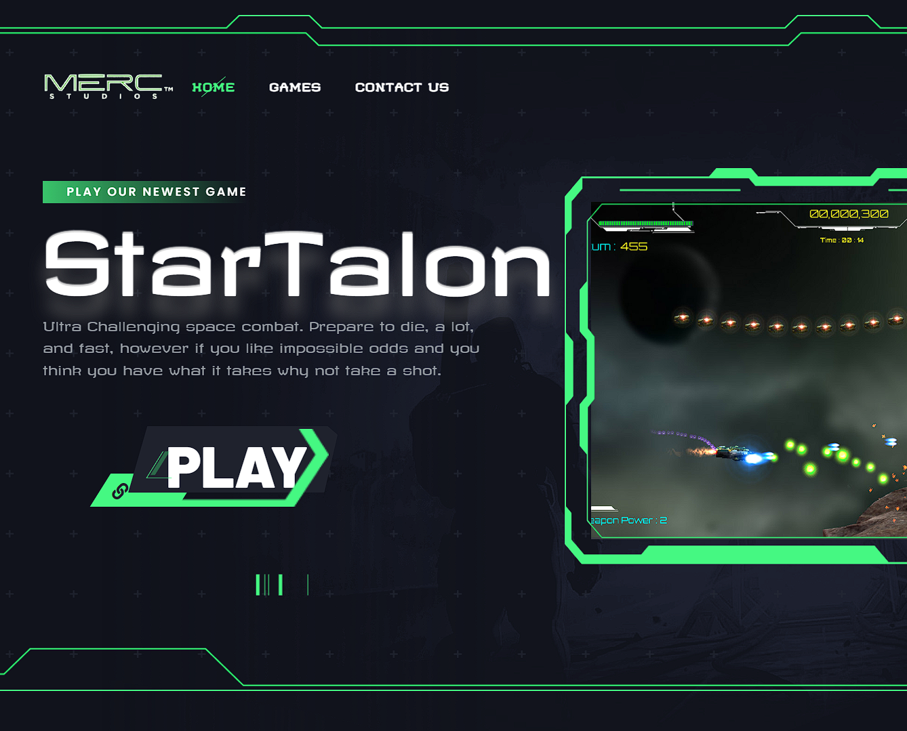

STAR TALON.
A focused testing case study built around player clarity, issue reproduction, and the details that shape a better play session.

LOOKING FOR THE
FRICTION.
For this project, I approached the game as a player advocate: following the intended experience, noticing where clarity broke down, and documenting issues so the team could reproduce and resolve them.
The strongest testing notes connect an observation to a player impact. I focused on precise reproduction steps, context, severity, and the difference between a bug and a moment that simply needs better communication.
Observe
Play through the intended loop and record the moments that interrupt flow.
Document
Turn observations into clear, useful notes with enough context for a team to act.
Validate
Retest the fix and confirm that the player-facing problem has actually improved.